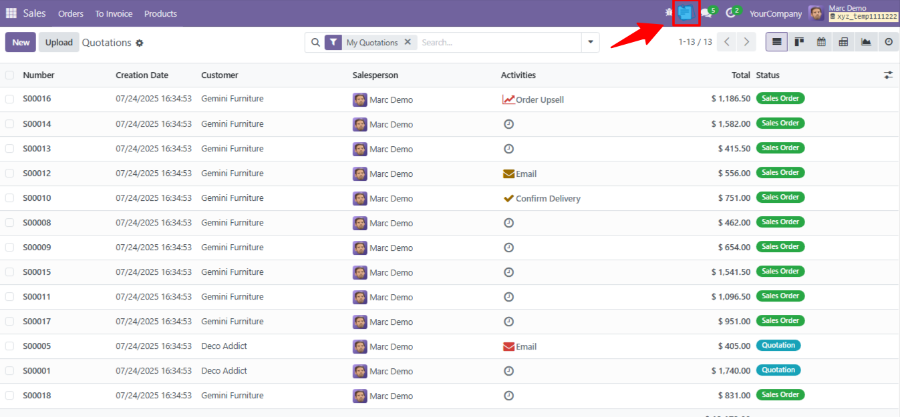
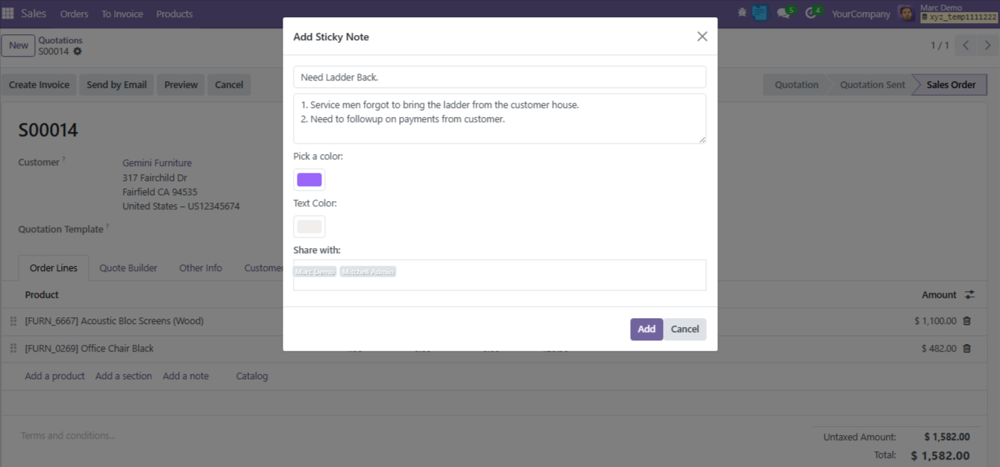
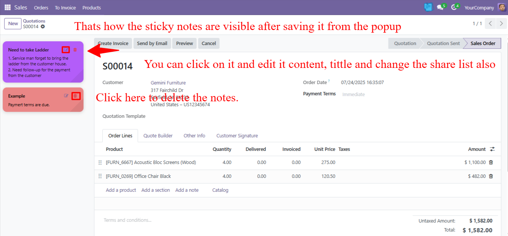

This module allows users to create and manage sticky notes directly within Odoo forms. Whether it's reminders, quick ideas, or task notes, users can add color-coded sticky notes to any record. Perfect for improving collaboration, boosting productivity, and keeping track of important context without leaving Odoo.
1. Download the module and place it in your custom addons directory.
2. Restart the Odoo server.
3. Activate developer mode.
4. Go to Apps → Update Apps List → Search and install "[Sticky Notes]".



If you have any questions or need assistance, feel free to reach out: